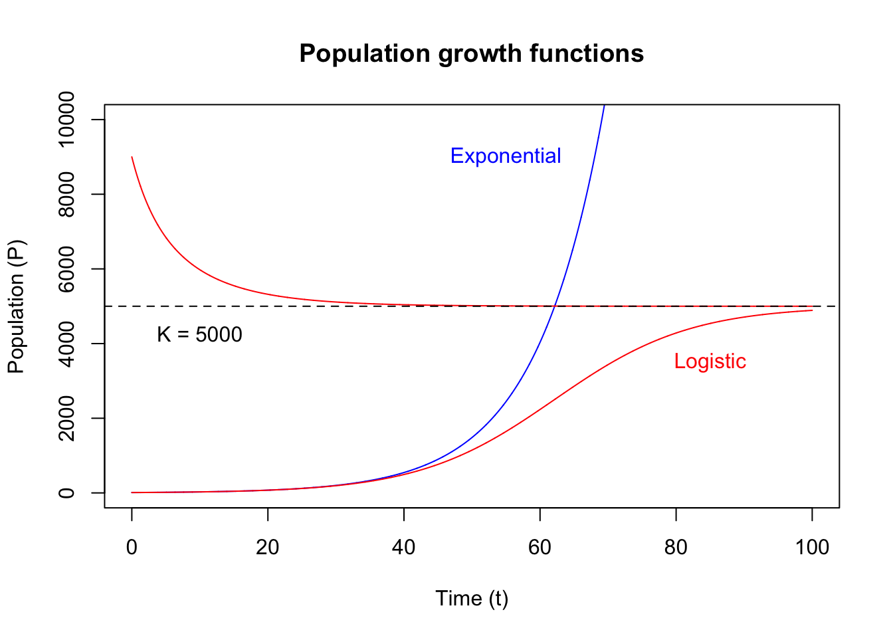

15 Mathematical Models
Mathematical models
Model building in R, outline
- Model types
- Statistical methods
- Linear interpolation
- Linear regression
- Nonlinear regression
- Optimisation
- Mathematical models
- Model limits
- Lorenz system
- Solve differential equations with
desolve - Exponential growth model
- Logistic growth model
- Lotka-Volterra model
- Drug concentration model
16 Time travel etiquette
The human mind has long been fascinated by the concept of time. The idea of Time Travel makes frequent appearances in popular Sci-Fi mediums. In a scene from Avengers Endgame, the Ancient One explains why she can’t lend the Time Stone to Dr. Bruce Banner, and how the universe’s path would alter if the Time Stone were to be removed from its present timeline. A similar illustration was shown in the TV series Loki which shows multiple timelines veer off the pre-determined timeline because of unexpected events.

Although we don’t yet have the technology to verify the details of time travel, don’t change anything in the past is a established etiquette when it comes to the practicalities of time travel. Theories such as the Butterfly Effect, which states that a small change in the present state of a dynamic system may have a dramatic effect in its future states, is also widely accepted.
17 The know-all intellect
Underlying all these speculations and theories about time and the events it carries, sci-fi or scientific, is the human desire to know about the future, and the belief that for every action, there is an effect, and that between every two consequential states there is a determined path.
As eloquently put by the French scholar Pierre Simon Laplace (1749:1827):
| “A Philosophical Essay on Probabilities” | Pierre-Simon Laplace |
|---|---|
| We may regard the present state of the universe as the effect of its past and the cause of its future. An intellect which at a certain moment would know all forces that set nature in motion, and all positions of all items of which nature is composed, if this intellect were also vast enough to submit these data to analysis, it would embrace in a single formula the movements of the greatest bodies of the universe and those of the tiniest atom; for such an intellect nothing would be uncertain and the future just like the past would be present before its eyes. |  |
18 Mortal model limits
As modellers, we wish to understand the past and predict the future just like the know-all intellect described by Laplace. This know-all intellect (also referred to as Laplace’s demon) is the ultimate goal of a mathematical modeller, the Holy Grail of the modelling trade. However, as good as it sounds, we have to admit that its requirements far exceed the mortal human capacity at present.
Therefore, in the present reality, one all important rule while building and interpreting a model is to know its limits, and to understand the full range of outcomes it may produce. Above all, the key message from Laplace’s description of the know-all intellect is that without the know-all abilities, it is impossible for a model to give exact predictions of the future.
A good model output often look like this:

19 Lorenz system
Let’s build a model. To emphasis the effect of small changes in model parameters, i.e. the sensitivity of a model, as a first example of a mathematical model, let’s implement the Lorenz system from which the term “butterfly effect” stems.
Behind every all powerful “model”, there is a set of differential equations.
A Lorenz system is described by this set of differential equations:
\[ \frac{dx}{dt} = a \cdot (y - x) \\ \frac{dy}{dt} = x \cdot (b - z) - y \\ \frac{dz}{dt} = x \cdot y - c \cdot z \]
Step 1 - Let’s translate these differential equations into an R function:
See ?ode for specification of the differential equation’s definition
Step 2 - Now we define the initial states of the system:
Step 3 - Assign values to the parameters:
Step 4 - Create a sequence of time points we want outputs for:
Step 5 - We are ready to solve the model (integrate the differential equations) with the ode function from the deSolve package:
Let’s remember these 5 steps as D.I.P.T.O.

Check the result:
time x y z time x y z
[1,] 0.00 1.000000 1.000000 1.0000000 0.00 1.010000 1.000000 1.0000000
[2,] 0.01 1.012567 1.259918 0.9848912 0.01 1.021742 1.262486 0.9850108
[3,] 0.02 1.048823 1.523999 0.9731148 0.02 1.057485 1.528931 0.9733919
[4,] 0.03 1.107207 1.798314 0.9651593 0.03 1.115622 1.805484 0.9656337
[5,] 0.04 1.186866 2.088545 0.9617377 0.04 1.195268 2.097894 0.9624546
[6,] 0.05 1.287555 2.400161 0.9638068 0.05 1.296153 2.411688 0.9648211Plot the outputs:
# plot( x = out_1[, "x"], y = out_1[, "z"], type = "l", xlab = "x", ylab = "z", col = "blue")
# lines(x = out_2[, "x"], y = out_2[, "z"], type = "l", xlab = "x", ylab = "z", col = "red")
# {
# rgl::plot3d (
# x = out_1[, "x"], y = out_1[, "y"], z = out_1[, "z"], type = "l", col = "blue",
# xlab = "x", ylab = "y", zlab = "z")
# rgl::lines3d(x = out_2[, "x"], y = out_2[, "y"], z = out_2[, "z"], col = "red")
# #rgl::play3d( rgl::spin3d( axis = c(0, 0, 1), rpm = 10), duration = 10 )
# rgl::rglwidget(elementId = "lorenz", width = 520, height = 520)
# }Have you found the butterfly yet? Watch this YouTube video in your spare time: Chaos - The Science of the Butterfly Effect
More on deSolve’s documentation
20 Population growth models
20.1 Exponential growth / decay

A biological population grows at a rate that is proportional to its size. In a unit of time (\(t\)), with \(P\) denoting the population size, and \(r\) denoting the proportionality constant, the instantaneous growth rate is given by:
\[\frac{dP}{dt} = r \cdot P\]
Let’s follow the same 5 steps (D.I.P.T.O.):
P0 <- 10 # initial state P0
T_LAST <- 100 # time length
T_INTR <- 0.01 # time interval
EXP_R <- 0.1 # growth proportionality constant
# 1 - Differential equation
ExpGrowth <- function(t, state, parms) {
dp <- parms["r"]*state["p"]
return(list(c(dp)))
}
## Using the `with` construct:
# ExpGrowth <- function(t, state, parms) {
# with(as.list(c(state, parms)), {
# dp <- r * p
# return(list(c(dp)))
# })
# }
# 2 - Initial state
init_state <- c(p = P0)
# 3 - Parameters
parameters <- c(r = EXP_R)
# 4 - Time
tps <- seq(0, T_LAST, by = T_INTR)
# 5 - Ode (model integration)
out_exp <- deSolve::ode(y = init_state, times = tps, func = ExpGrowth, parms = parameters)Now, let’s plot the integrated model:

The exponential growth function can be solved analytically (most models don’t have an analytical solution):
\[P(t) = P_0 \cdot e^{rt}\]
And we can check our result from the integrator (ode) against this function:

We also often see the use of exponential decay function in biological system models. Drug concentration in blood is a typical example. The exponential decay model has negative growth rate:
\[\frac{dP}{dt} = - r \cdot P\]
init_state_decay <- c(p = 200000)
parameters_decay <- c(r = -EXP_R)
out_exp_decay <- deSolve::ode(y = init_state_decay, times = tps, func = ExpGrowth, parms = parameters_decay)
{
plot(out_exp, xlab = "Time (t)", ylab = "Population (P)", main = "Exponential growth", col = "blue")
lines(out_exp_decay, col = "red")
text(x = 85, y = 150000, labels = "growth", col = "blue")
text(x = 15, y = 150000, labels = "decay", col = "red")
}
20.2 Logistic growth
Resource limitations mean that the population can’t exceed a certain limit, which we refer to as carrying capacity denoted \(K\). We introduce a term \(1-\frac{P}{K}\) into the differential equation:
\[\frac{dP}{dt} = r \cdot P \cdot (1-\frac{P}{K})\]
which is referred to as the logistic growth or the Verhulst model. Note that the term \(1-\frac{P}{K}\) is close to 1 when \(P\) is small which makes this equation to share a similar shape with the exponential growth model at the beginning. The growth slows as the population \(P\) approaches carrying capacity \(K\).
DIPTO:
LOG_K <- 5000
# 1 - Differential equation
LogGrowth <- function(t, state, parms) {
dp <- parms["r"] * state["p"] * (1 - state["p"] / parms["k"])
return(list(c(dp)))
}
# 2 - Initial state
init_state_1 <- c(p = P0) # Same as exponential growth
init_state_2 <- c(p = LOG_K * 1.8) # Initial population greater than carrying capacity
# 3 - Parameters
parameters <- c(r = EXP_R, k = LOG_K)
# 4 - Time
# Same as exponential growth
tps <- seq(0, T_LAST, by = T_INTR)
# 5 - Ode (model integration)
out_log_1 <- deSolve::ode(y = init_state_1, times = tps, func = LogGrowth, parms = parameters)
out_log_2 <- deSolve::ode(y = init_state_2, times = tps, func = LogGrowth, parms = parameters)Let’s compare the two growth functions:
{
col_1 <- "blue"
col_2 <- "red"
col_3 <- "black"
plot(
out_exp,
xlab = "Time (t)", ylab = "Population (P)", main = "Population growth functions",
ylim = c(0, LOG_K * 2), col = col_1
)
lines(out_log_1, col = col_2)
lines(out_log_2, col = col_2)
abline(h = LOG_K, col = col_3, lty = 2)
text(x = 10, y = LOG_K * 0.95, labels = paste0("K = ", LOG_K), col = col_3, pos = 1)
text(x = 55, y = LOG_K * 1.8, labels = "Exponential", col = col_1)
text(x = 85, y = LOG_K * 0.7, labels = "Logistic", col = col_2)
}
Exercises
E8.1
What data structure is returned by the ode function?
E8.2 Lotka-Volterra
The Lotka-Volterra model describes the dynamics of two interactive species (predator and prey) in an ecological system, and contains a pair of equations:
\[ \frac{dx}{dt} = a \cdot x - b \cdot x \cdot y \\ \frac{dy}{dt} = c \cdot x \cdot y - d \cdot y \]
Solve and plot the model based on these parameter values
E8.3 Drug concentration model
A simple 2 compartment model based on this set of differential equations is very useful for modelling the concentraition of drugs: \[ \frac{dx}{dt} = -r1 * x \\ \frac{dy}{dt} = r1 * x - r2 * y \]
Solve and plot the model based on these parameter values